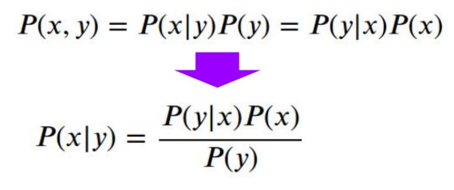
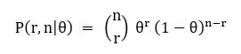
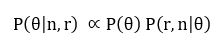
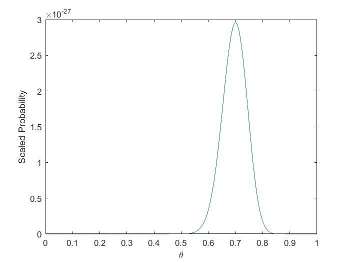

Ah, the Revd Thomas Bayes. By all accounts, a nice man. And there’s no denying he had a knack with conditional probabilities. But whenever I hear about him, I always find myself a little confused: put simply, why is he mentioned so frequently? Every introduction to probability and statistics features his little biography. They repeat the same portrait that you see here, which almost certainly bears no resemblance to the real man. They talk about drawing black and white stones from an urn without replacement; or performing medical tests for a rare disease that only 1 in 10,000 people have. He’s even famous enough that an entire philosophical movement is associated with his name, and nerds worldwide loudly proclaim themselves ‘Proud Bayesians’. All off the back of a theorem that our very own Rich Pang derived in two lines during his Imbizo tutorial. It just doesn’t make sense, what’s the deal?!
Well, Ladies and Gentleman, Boys and Girls, I think I might finally have got my head around this one. In an attempt to understand all that statistical mumbo-jumbo, I’ve been reading ‘Probability Theory: The Logic of Science’ by E. T. Jaynes. This book certainly filled one part of its role, I now finally understand what those mysterious things, P-values, t-tests and χ2 statistics, are. All my previous exposures to these horrendous constructs seemed to involve pulling an equation out of thin air and getting to work. In contrast, Jaynes describes them in a systematic way: as approximations to optimal statistical inference.
But the book also taught me about a philosophical battle that has been raging in statistics for the last century, all concerning the question: ‘what does probability mean?’
Now, I know it sounds like the kind of thing you’d hear from the wanker in the corner of a party (‘Ah, but man, like, ugh, what does it all MEAN? Haha, like, you know, sometimes, like, I think I’m TOO meta, haha, if that is possible, …, peace.’) But it turns out how you interpret probability can have a big influence on how you practice it, and it all revolves around the use of Bayes Theorem.
In the red corner we have the frequentists. They believe probability describes the expected frequency of a random event if you run it enough times, for example, the probability of a coin being heads is the proportion of times it comes up heads when you flip it infinitely many times. Frequentists ran statistics departments for most of the 20th century, perhaps they still do, and they think Bayes’ theorem is an abomination, badly defined and terribly subjective (what is the prior probability? How do you define it!?).
In the blue corner we have the Bayesians. This group view probability as the plausibility of an event. The phrase: ‘the probability of a coin coming up heads is half’ means you rate both heads and tails as equally plausible, without the need to run infinite experiments. They love Bayes’ theorem and would flip conditional probabilities all day long if they could. Further, it seems like every scientist with an opinion on this is a Bayesian, but that might just be a 21st century phenomena.
These don’t sound particularly different on first reading, but we can understand the difference in a simple example. Say you have a biased coin, and the probability of it coming up heads is some unknown number θ. You flip the coin 100 times and see 70 heads, what is your guess for θ?
A Bayesian says a quick prayer to the very reverend before progressing as follows. They know the probability of r heads in n flips is:
And let’s say their prior for θ is uniform between 0 and 1 (they’re completely ignorant about the coin’s bias). Then we apply our favourite theorem to get:
You can do the maths, and it turns into the following curve:
Which makes a lot of sense, peaking nicely at θ = 0.7.
But according to frequentists we’ve made a catastrophic conceptual error! How can we talk about P(θ|r, n) when θ is not a random variable?! Θ is a fixed property of the particular coin, it makes no sense to talk about the frequency with which θ occurs, hence its probability is not defined in a frequentist framework. That damn Reverend and his wily tricks!
Of course, we proud Bayesians will happily talk about the probability of θ. It just represents the plausibility of a particular value of θ, and from this advantageous conceptual starting point we quickly reached a reasonable (and in many ways, optimal) solution to our problem.
Jaynes was as proud a Bayesian as you could hope to find. In fact, he spends much of the book aggressively defending his work against the shadowy organisation of frequentists, while also taking swipes at most of modern mathematics and anyone else who happens to annoy him. (The book features some pretty spicy moments that I’ll collect below.) Why does he feel the need to do this? Well, it seems that for most of his life he was an outcast within the statistical community, all because of his love affair with our humble Revd Bayes. It gets quite sad at times, he has to devote entire chapters to tearing other arguments to shreds rather than doing something constructive, all over a philosophical disagreement.
Now is not the time to wade into the debate about what probability means, maybe we’ll save that for next issue. But I think we can finally answer one question. Why do people insist on teaching you about Bayes’ theorem as if it wasn’t obvious? Because for the last century nobody thought it was legitimate, they simply refused to use it! Thankfully, the situation has almost completely reversed in the last couple of decades, so you and I probably won’t have to put up with the kind of things Jaynes did. But there are a couple of lessons to be learnt here. Firstly, philosophical battles may seem like indulgent wastes of time, but there is no such thing as just ‘doing the maths’, we are all influenced by our beliefs, and perhaps we can avoid wasting another 100 years of discovery on false premises next time. Secondly, people being dickheads in Science is not a new phenomena!